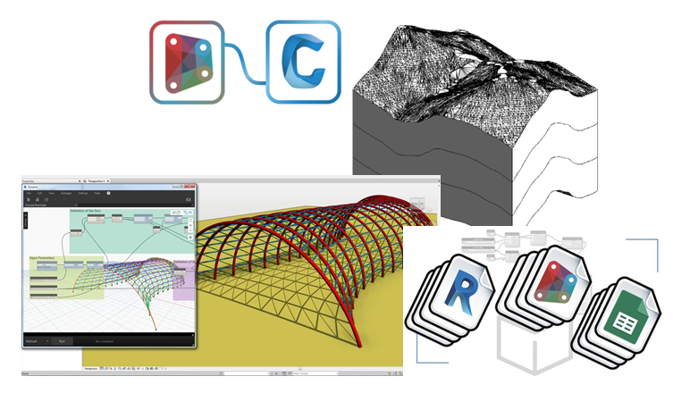
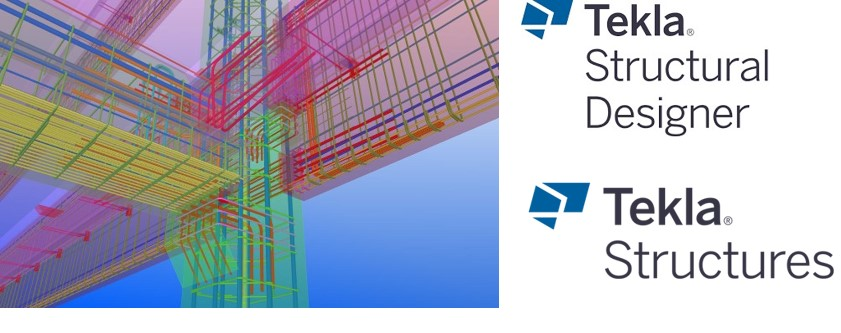
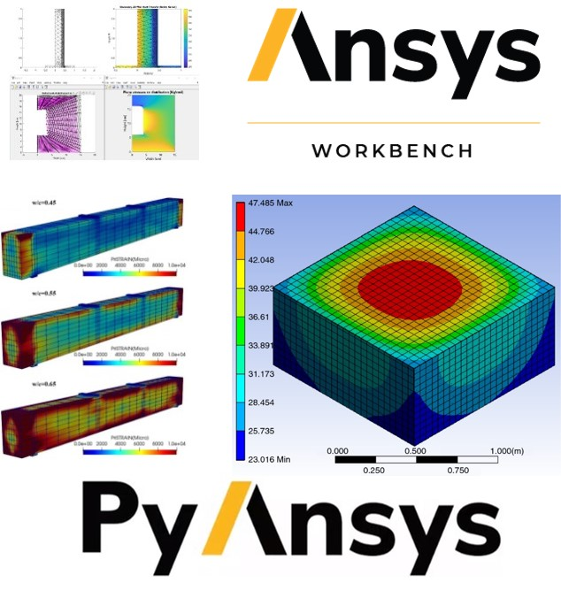
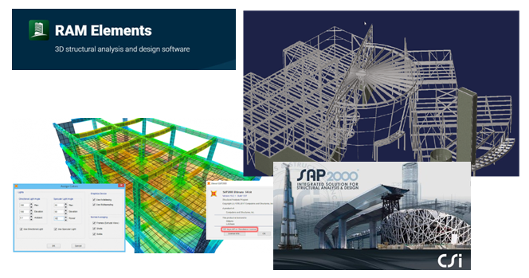

BIM and CAD Modelling
 - Dynamo - Revit - AutoCAD
- Steel Warehouses
- Reinforced Concrete Frames and Buildings
- Generation of quotes, volumes and budgtes
- Revit - Civil3D - AutoCAD
- Topographyc surveys and modelling of surfaces and contour lines
- Design and modelling of Highways
- Tekla Structures - Tekla Structural Designer - Rhino/Grasshopper
- BIM automation of RC/steel structures and buildings
- Code-compliant free-clash optimization design of rebar in RC structures
- Automation design of steel connections (buildings, warehouses, etc.)
3D Modelling of Reinforced Concrete Structures and Steel Structures
Numerical modelling, simulation and analysis with the Finite Element Method (FEM)
- ANSYS Workbench - PyAnsys
- Heat transfer - Stationary and Transient 1D/2D/3D Heat Flow
- Static and Dynamic Plane Stress and Plane Strain
- Size optimization design of RC and steel components
- ANSYS Mechanical- Ansys Parametric Design Languae (APDL)
- Parametric FEA and design of irregular RC/steel building frames
Structural design, modelling and analysis
- SAP2000
- Reinforced Concrete Manholes
- Reinforced Concrete Buildings
- Reinforced Concrete Retaining walls and Foundations
- RAM 8 elements
- Design, analysis and modelling of Steel Structures and Connections
Numerical computations for the design and analysis of civil infrastructure
- Scientific Computation for structural engineering
- Parallel computing
- Optimization algorithms
- Numerical methods
- Analysis and Design of structures
- Static Linear and Non-Linear analysis of 3D structures and buildings
- Dynamic Linear and Non-Linear analysis of 3D Structures and buildings against seismic and impact actions
- Optimization design of Reinforced Concrete Structures
- Data Analysis
- Columns, Beams, Retaining walls and Foundations